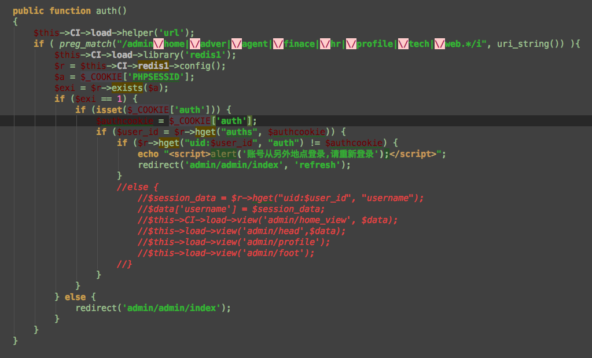

hooks
啥是hooks
可以这样理解，当请求一个url，后端设置有的一段程序通过正则这样的判断拦截下来（附着在这个入口上），然后进行相关处理，有几种处理情况，具体参考挂钩点列表
why hooks
对于这个验证，其实可以重新写一个核心类，所有的controller都继承这个核心类，也可实现。为了认识hooks这东西就选择用hooks。
ci中使用hooks
详见这里
demo
session验证和auth验证
首先说明session验证是确定是否存在这个会话，auth是获取具体用户的资料（username等），auth是session生成时，我们自己给每个用户设置的标识，也发送给客户端作为cookie贮存（这样做的好处是通过这个cookie标识，才知道用户是哪个id，方便也容易取客户的数据）。
然后就是在hooks写个方法。

就像没用mvc之前，用户登录前写个函数拦截在前面。hooks其实在我看来就是监视某个用户行为，触发拦截处理。